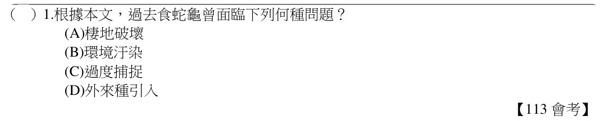
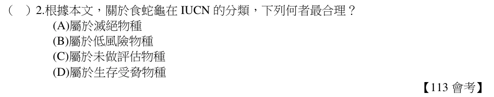

1下學期 第 5 章
生物多樣性與保育
答案卡
點題號可跳到該題詳解。開啟「遮住答案」後，點一下塗卡格才會顯示答案。
詳解
1
C
由文章中得知由於中國市場的需求，食蛇龜被大量捕捉並運往中國，而使野外的數量下降。故選【C】。
看題目

2
D
由圖可知，食蛇龜屬於受脅物種。故選【D】。
看題目

1下學期 第 5 章
點題號可跳到該題詳解。開啟「遮住答案」後，點一下塗卡格才會顯示答案。
由文章中得知由於中國市場的需求，食蛇龜被大量捕捉並運往中國，而使野外的數量下降。故選【C】。

由圖可知，食蛇龜屬於受脅物種。故選【D】。
